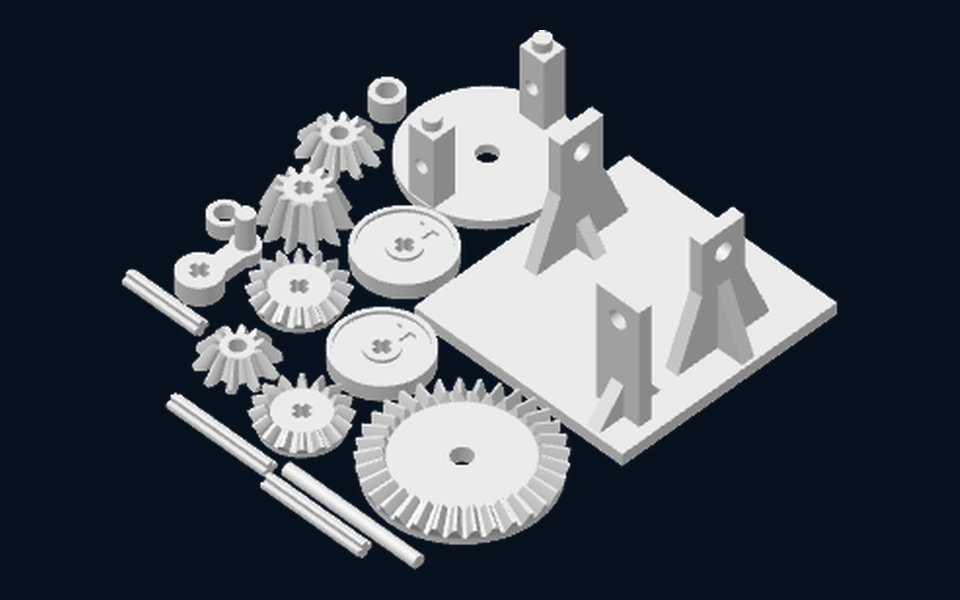

差速器 CAD 與列印檔案
想改設計用 FreeCAD 檔；用其他 CAD 軟體（SolidWorks、Fusion、Onshape…）開 STEP；直接列印就下載 3MF 專案。
FreeCAD 檔（可編輯）

差速器組合圖differential_assembly.FCStd
- 16 個零件來自 text-to-cad 的組合 STEP
- 曲柄用 App::Link 連結
crank.FCStd，改零件圖組合圖會跟著更新
STEP 檔（通用 CAD 格式）
差速器組合differential_assembly.step
- 全部 17 個零件，已在組裝位置
- 任何 CAD 軟體都能開，可量尺寸、做干涉檢查或改設計
- 壓縮成 ZIP（原檔 8.0 MB），下載後先解壓縮再開啟
3MF 檔（直接列印）

Bambu Studio 列印專案differential_model.3mf
- 盤 1：整組 17 個零件一次印完
- 盤 2：另一組曲柄、小齒輪與輸入軸（輸入軸直立列印），可依需要選印
- 設定為 Bambu Lab X2D、0.4 噴嘴、0.16 mm 高品質、Bambu PLA Basic；零件已設計成免支撐
- 其他機型可用 Bambu Studio 或 OrcaSlicer 開啟後換印表機再切片
FreeCAD 檔怎麼開啟
- 安裝免費的 FreeCAD（1.1 版以上）。
- 把兩個
.FCStd放在同一個資料夾（解壓 ZIP 即可）。 - 開啟
differential_assembly.FCStd，曲柄會自動從crank.FCStd載入。 - 要改曲柄：開
crank.FCStd→ 雙擊Params試算表 → 改數值 → 按 Ctrl+R 重算並存檔，回到組合圖就會更新。
曲柄參數（Params 試算表）
| 別名 Alias | 說明 | 數值 (mm) |
|---|---|---|
crank_r | 曲柄半徑（輪轂中心到握把中心） | 15 |
hub_d | 輪轂外徑 | 12 |
hub_h | 輪轂高度（要和差速器模型一致） | 6 |
arm_w | 曲柄臂寬 | 6 |
arm_t | 曲柄臂厚 | 4 |
boss_d | 握把底座外徑 | 8 |
handle_d | 握把直徑 | 5 |
handle_h | 握把高度 | 14 |
axle_d | LEGO 十字軸外徑 | 4.8 |
axle_arm | LEGO 十字軸臂寬 | 1.8 |
lego_clear | 十字孔每邊間隙 | 0.1 |
曲柄半徑 15 mm 是轉一整圈都不會撞到底座肋的尺寸（18 mm 會撞到前方立柱的肋）。